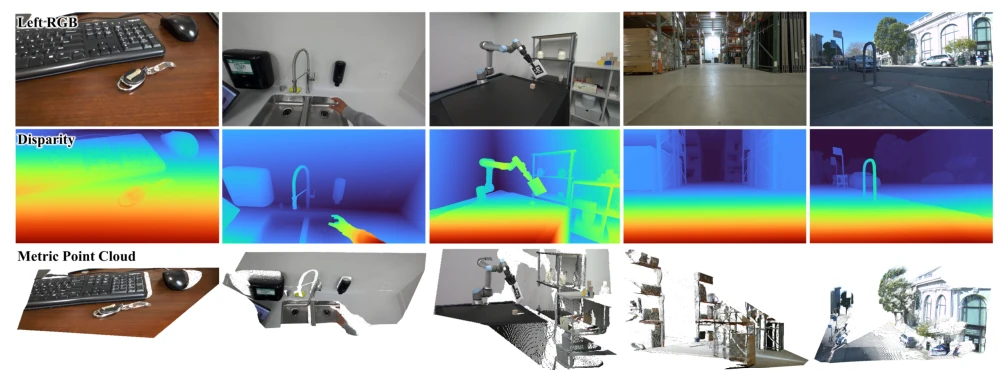
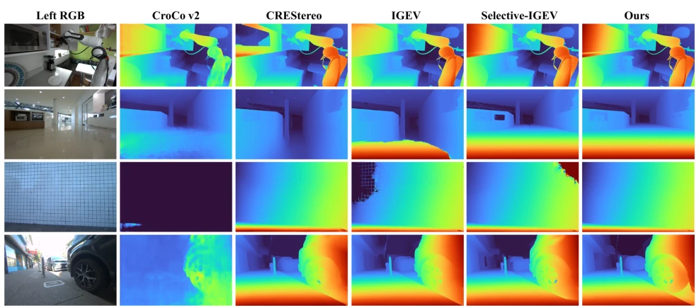
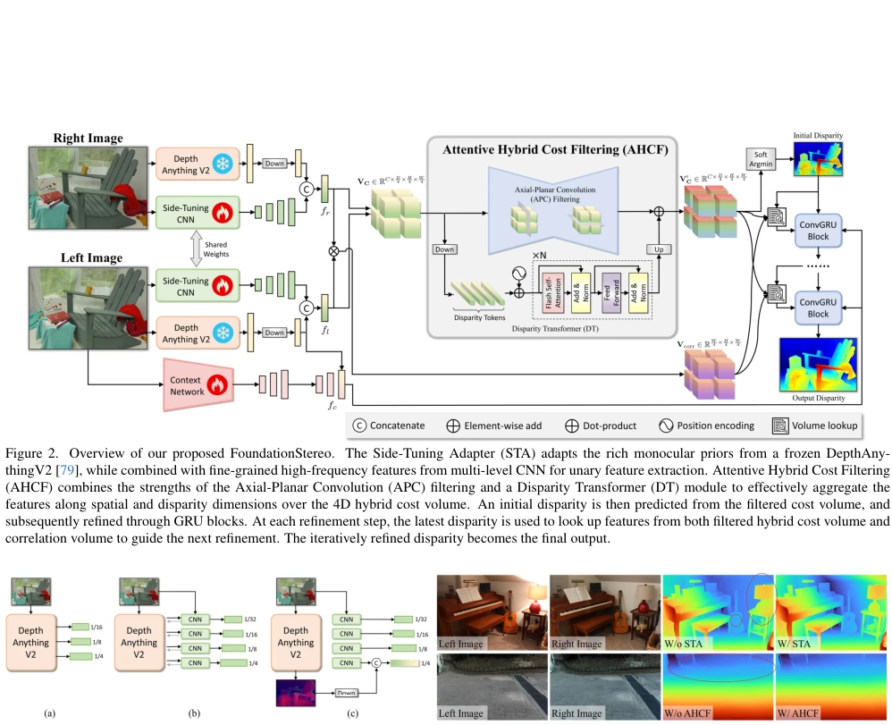
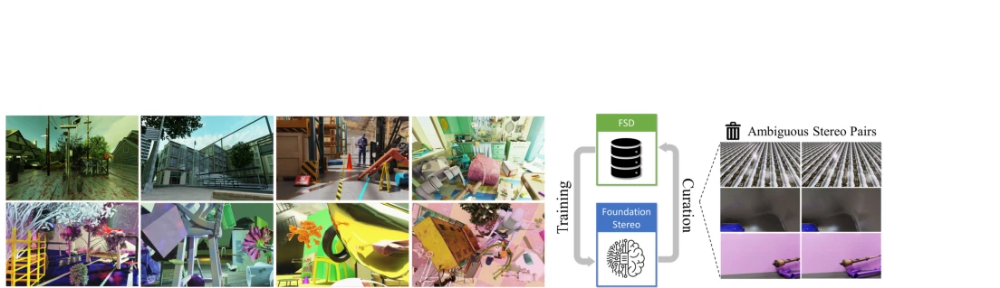
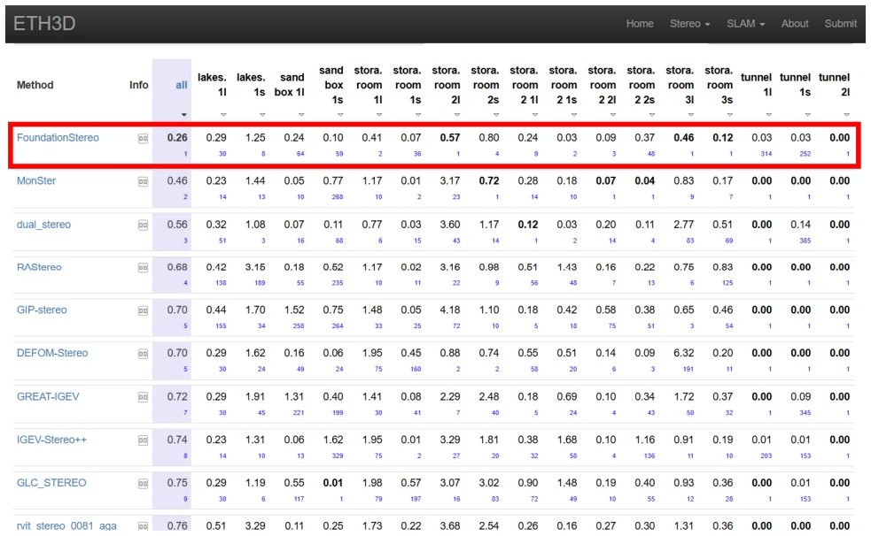
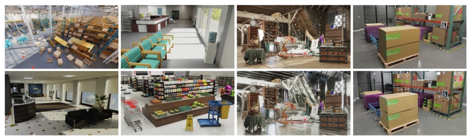
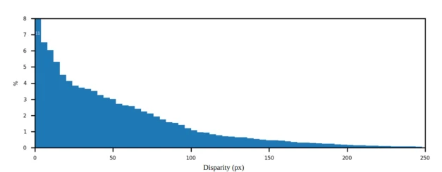

Bowen Wen, Matthew Trepte, J. Aribido, Jan Kautz, O. Gallo, S. Birchfield abspdf
论文点评Review
这篇论文试图用“基础模型”的范式解决立体匹配的老大难问题——零样本泛化。虽然“Foundation”这个词现在满天飞，但作者确实搞了个1M对的大规模合成数据集，还搞了个自清洗流程，挺实在。架构上把单目深度估计的ViT先验搬过来，配合新的成本体过滤模块，效果确实能打。不过，0.7秒的推理时间（A100上）对于实时应用来说还是有点“重”，而且透明物体数据还是不够多，这点得承认。总的来说，算是给立体匹配领域开了个新头，但离真正的“通用”还有距离，毕竟Sim-to-Real gap 没那么容易彻底消除。
This paper attempts to address the long-standing challenge of stereo matching—zero-shot generalization—using the "foundation model" paradigm. Although the term "Foundation" is ubiquitous nowadays, the authors indeed constructed a large-scale synthetic dataset of 1M pairs and implemented a self-cleaning pipeline, which is quite substantial. Architecturally, they incorporated the ViT prior from monocular depth estimation, paired with a novel cost volume filtering module, yielding impressive results. However, the 0.7-second inference time (on A100) remains somewhat "heavy" for real-time applications, and the data on transparent objects is still insufficient, a point that must be acknowledged. Overall, this paves a new direction for the stereo matching field, but there is still a gap from true "generalization", as the Sim-to-Real gap is not easily eliminated completely.
研究动机Motivation
现有的立体匹配网络，像RAFT-Stereo [36] 或 IGEV [71]，虽然精度不错，但基本都得在目标域微调，泛化能力差。其他任务靠Scaling Law 搞定了零样本，比如CLIP [47] 或 SAM [32]，但立体匹配一直卡在Sim-to-Real gap上。之前的尝试 [10, 17, 37] 要么数据少（Scene Flow [43] 只有40K），要么架构不支持长程上下文，导致无法像其他视觉基础模型那样开箱即用。这限制了立体匹配在实际场景的部署，毕竟微调成本太高。此外，现有方法在处理纹理缺失、反射等复杂场景时表现不佳，缺乏鲁棒性。
Existing stereo matching networks, such as RAFT-Stereo [36] or IGEV [71], while achieving high accuracy, generally require fine-tuning on the target domain and exhibit poor generalization. Other tasks have achieved zero-shot learning via Scaling Law, such as CLIP [47] or SAM [32], but stereo matching remains hampered by the Sim-to-Real gap. Previous attempts [10, 17, 37] either suffered from limited data (Scene Flow [43] only 40K) or architectures that did not support long-range context, preventing them from being out-of-the-box like other visual foundation models. This limits the deployment of stereo matching in real-world scenarios, given that fine-tuning costs are too high. Furthermore, existing methods perform poorly in complex scenarios involving texture loss, reflections, etc., lacking robustness.

Figure 1. Zero-shot prediction on in-the-wild images. Our method generalizes to diverse scenarios (indoor / outdoor), objects of challenging properties (textureless / reflective / translucent / thin-structured), complex illuminations (shadow / strong exposure), various viewing perspectives and sensing ranges.

Figure 5. Qualitative comparison of zero-shot inference on in-the-wild images. For each comparison method we select the best performing checkpoint from their public release, which has been trained on a mixture of public datasets. These images exhibit challenging reflection, translucency, repetitive textures, complex illuminations and thin-structures, revealing the importance of our network architecture and large-scale training.
The overall pipeline is: Input left and right images -> Feature Extraction -> Cost Volume Construction -> Filtering -> GRU Iterative Refinement. There are three core innovations. First is the Side-Tuning Adapter (STA), which combines frozen DepthAnythingV2 [79] ViT features with CNN features, leveraging monocular priors to mitigate the Sim-to-Real gap. Second is the Attentive Hybrid Cost Filtering (AHCF), which includes Axial-Planar Convolution (APC) and Disparity Transformer (DT). APC decomposes 3D convolution into spatial and parallel directions, reducing memory consumption while expanding the receptive field; DT performs Self-Attention along the disparity dimension to address long-range context issues. Finally, GRU Iterative Refinement utilizes context features for guidance. Cost volume construction employs a hybrid of Group-wise Correlation and Concatenation, balancing similarity and feature retention.

Figure 3. Left: Design choices for STA module. Right: Effects of the proposed STA and AHCF modules. “W/o STA” only uses CNN to extract features. “W/o AHCF” uses conventional 3D CNN-based hourglass network for cost volume filtering. Results are obtained via zero-shot inference without fine- tuning on target dataset. STA leverages rich monocular prior to reliably predict the lamp region with inconsistent lighting and dark guitar sound hole. AHCF effectively aggregates the spatial and long-range disparity context to accurately predict over thin repetitive structures.

Figure 4. Left: Samples from our FoundationStereo dataset (FSD), which consists of synthetic stereo images with structured indoor / outdoor scenes (top), as well as more randomized scenes with challenging flying objects and higher geometry and texture diversity (bottom). Right: The iterative self-curation process removes ambiguous samples inevitably produced from the domain randomized synthetic data generation process. Example ambiguities include severe texture repetition, ubiquitous reflections with limited surrounding context, and pure color under improper lighting.
In terms of datasets, the authors constructed the 1M-pair FoundationStereo Dataset (FSD), which is much larger than Scene Flow [43], and employed self-cleaning to filter out blurry samples. Evaluation was conducted on Scene Flow, Middlebury, KITTI, and ETH3D. In zero-shot results, it performed better than fine-tuning methods such as RAFT-Stereo [36], with significantly reduced BP-2 error especially on KITTI and Middlebury. On the ETH3D leaderboard, it ranked first after fine-tuning, and in zero-shot mode it could match fine-tuned baselines. Ablation studies demonstrate that both STA and AHCF are effective, particularly STA using frozen ViT performs better than fine-tuning. EPE metrics also indicate that zero-shot performance surpasses some fine-tuning methods.

Figure 6. ETH3D leaderboard screenshot. Our fine-tuned foundation model (red box) ranks 1st at the time of submission.

Figure 7. Examples scene models involving factory, hospital, wood attic, office, grocery store and warehouse. In the third column, we demonstrate an example of metallic material randomization being applied to augment scene diversity. The last column shows comparison of a warehouse between the real (bottom) and our simulated digital twin (top) in high fidelity.
其他图片Other Figures

Figure 9. Disparity distribution in our proposed FSD.